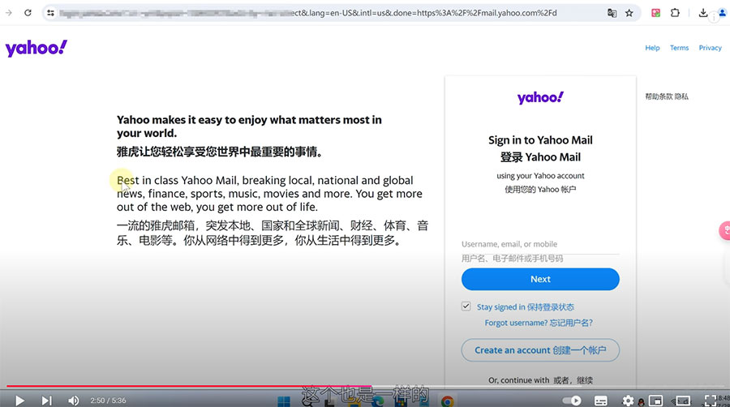

chrome 翻译扩展程序，功能强大！谷歌翻译无法翻译此网页，谷歌翻译用不了无法使用替代插件
Google Chrome浏览器自带的翻译功能，在大陆需要开翻墙才能使用，也可以安装其它翻译扩展使用，不开翻墙也能翻译。
翻译插件：https://immersivetranslate.com/
一、插件功能简介
这类插件通常具备：
✔ 网页内容即时翻译
✔ PDF 文件在线/嵌入翻译
✔ 支持右键翻译选中文本
✔ 支持多语言自动识别
✔ 有时候支持截图翻译
二、常见使用方法
方法 1️⃣：自动翻译当前网页
安装后打开一个外文网页（例如英文、日文、法文等）：
插件图标通常会亮起
点击插件图标 → 选择 翻译此页
部分插件有自动翻译开关，可以设置自动翻译所有非中文网页。
方法 2️⃣：翻译选中的文本
在网页中选中一段文字
右键菜单出现 “翻译” 项
点击即可弹出翻译结果
这是最直接的翻译方式。
方法 3️⃣：翻译 PDF 文件
如果你打开 PDF：
✔ 有些翻译插件会自动识别 PDF 内容
✔ 并提供翻译按钮
使用步骤：
在 Chrome 打开 PDF
点击插件图标
选择 翻译 PDF
等待结果
注意：某些插件对大 PDF 文件可能较慢。
⚙️ 设置与偏好
点击插件图标一般可以打开设置：
🔹 目标语言
🔹 是否自动翻译
🔹 是否翻译图片内文字（OCR）
🔹 快捷键
🔹 是否显示悬浮翻译按钮
建议优先设置：
✔ 目标翻译语言：中文（简体）
✔ 默认行为：自动翻译外文
✔ 打开 OCR（如支持）


网页翻译演示